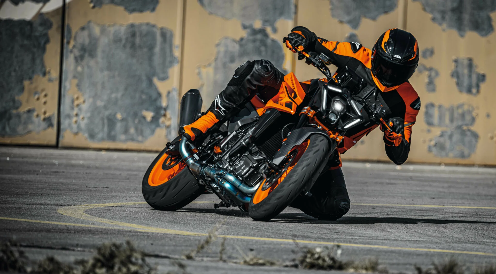

Svet Naked motora

Naked motocikli su dizajnirani za vozače koji cene minimalizam, agresivan dizajn i vrhunske performanse na asfaltu. Bez oklopa koji bi sakrio mehaniku, ovi motocikli nude direktan kontakt sa mašinom i vetrom, pružajući autentičan osećaj brzine i slobode.
Bilo da se radi o prolasku kroz gradsku gužvu ili dinamičnoj vožnji krivudavim putevima, ove mašine se odlikuju izuzetnom okretnošću, trenutnim odzivom na gas i uspravnom, prirodnom pozicijom sedenja. Ovde možete istražiti najbolje modele koji definišu naked segment.